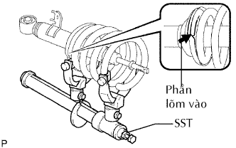
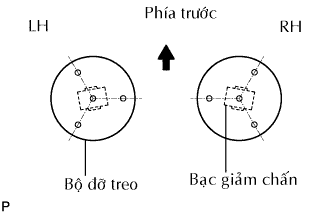

BỘ GIẢM CHẤN TRƯỚC VỚI LÒ XO TRỤ > LẮP LẠI |
| 1. LẮP LÒ XO TRỤ TRƯỚC TRÁI |
|  |
Dùng SST, nén lò xo trụ.
Lắp lò xo trụ vào bộ giảm chấn. Hãy lắp đầu dưới của lò xo trụ vào chỗ lõm của đế phía dưới lò xo.
Lắp 2 hãm, vòng đệm, cao su phía trên và đỡ hệ treo trước vào thanh nối.
Lắp tạm đai ốc hãm mới.
| 2. LẮP GIÁ ĐỠ PHÍA TRƯỚC VỚI ĐAI ỐC GIẢM CHẤN TRƯỚC |
|  |
Gióng thẳng bộ đỡ hệ thống treo và các bạc giảm chấn như được chỉ ra trong hình vẽ.
Xiết chặt đai ốc hãm.
Nhả lò xo trụ trong khi kiểm tra vị trí của đế phía dưới lò xo và giá đỡ hệ thống treo.